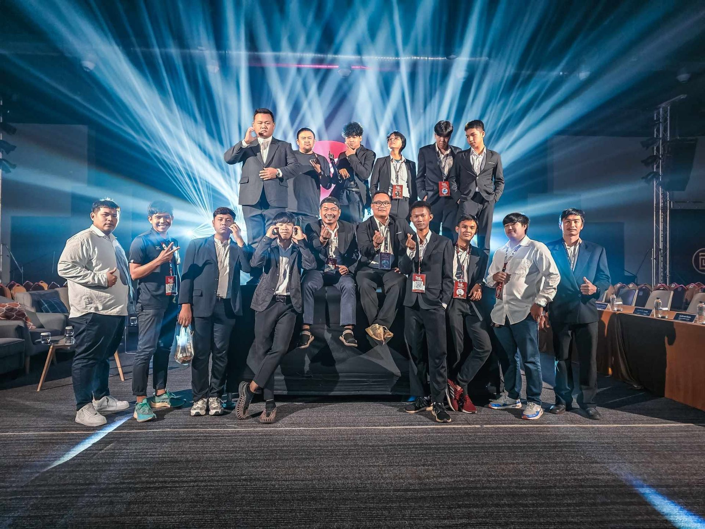

รวบรวมภาพกิจกรรม การทำงานจริง จากงานต่างๆอีกมากมาย
ร่วมปฏิบัติหน้าที่ในกองถ่ายทำภาพยนตร์สั้นเพื่อส่งเสริมการท่องเที่ยวจังหวัดหนองคาย ในตำแหน่ง ผู้ช่วยกล้อง / ซัพพอร์ตกองถ่าย ดูแลการเซ็ตอัปอุปกรณ์ และร่วมเก็บบันทึกภาพฟุตเทจจริงนิดหน่อย
รับหน้าที่สำคัญในส่วนของ ตัดต่อวิดีโอ และทำ เอฟเฟกต์ พร้อมทั้งร่วม จัดแสง , ร่วมบันทึกภาพ และออกแบบมุมกล้อง
ร่วมปฏิบัติหน้าที่ในทีมงานถ่ายทอดสดการประกวด Miss Grand Thailand ประจำจังหวัดร้อยเอ็ด 2025 ตำแหน่งกล้องหลัก
ร่วมปฏิบัติหน้าที่ในทีมงานถ่ายทอดสดการประกวด Miss Grand Thailand ประจำจังหวัดอุดรธานี 2025 ตำแหน่งกล้องเคลื่อนที่
ร่วมปฏิบัติหน้าที่ในทีมงานถ่ายทอดสดการประกวด Miss Grand Thailand ประจำจังหวัดอุดรธานี 2024 ตำแหน่งกล้องเทเลโฟโต
ร่วมปฏิบัติหน้าที่ในทีมงานถ่ายทอดสดการประกวด Miss Grand Thailand ประจำจังหวัดหนองคาย 2023 ตำแหน่งกล้องแคนดิด
ร่วมปฏิบัติหน้าที่ในทีมถ่ายทอดสด ในงานพิธีบวงสรวงหลวงพ่อพระใส จ.หนองคาย ตำแหน่งกล้องเทเลโฟโต
ร่วมปฏิบัติหน้าที่ในทีมถ่ายทอดสด พิธีการในงานอนุสาวรีย์ปราบฮ่อ ของจังหวัดหนองคาย ตำแหน่งกล้องแคนดิด
ร่วมปฏิบัติหน้าที่บันทึกภาพและถ่ายทอดสดคอนเสิร์ตการแสดงสด มนต์แคน แก่นคูน ตำแหน่งกล้องเทเลโฟโต

ร่วมปฏิบัติหน้าที่ในทีมงานถ่ายทอดสดการประกวด Miss Grand Thailand ประจำจังหวัดอุดรธานี 2022 ตำแหน่งผู้ช่วยกล้อง
ร่วมปฏิบัติหน้าที่ในทีมงานถ่ายทอดสดในการถ่ายทอดสดการแข่งขันฟุตบอลไทยลีก สโมสรหนองบัว พิชญ เอฟซี ตำแหน่งผู้กล้องเคลื่อนที่